Raw WebGL
Nick Desaulniers
Nick Desaulniers
Open Source Zealot at Mozilla
Organized NSA protest in San Francisco
Spoke About the Evils of Software Patents on NPR
There's more to JS than jQuery
There's more to WebGL than Three.js
Warning
Graphics programming is a rabbit hole that is infinitely deep
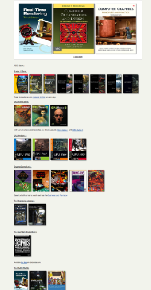Warning
Graphics programming is equal parts physics (how do I accurately model the physical phenomina that I am seeing) and computer science (how do I calculate all this math and still hit 16.66ms).
It's all that math you learned but never had a chance to apply.
- Geometry
- Trigonometry
- Linear Algebra
History
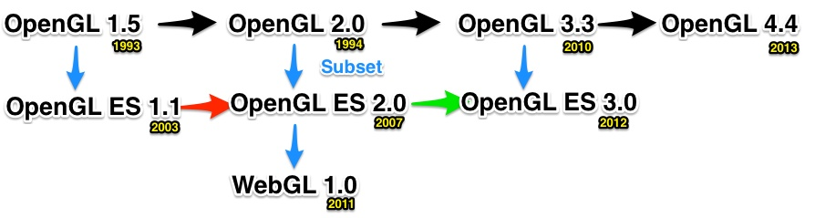Pipeline
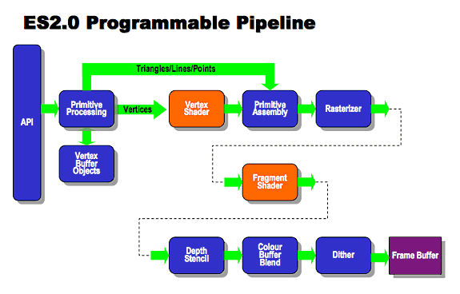What goes into a WebGL
Application?
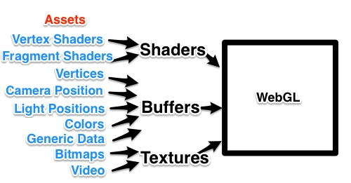All of these are optional except a single shader pair
Terminology
Vertex
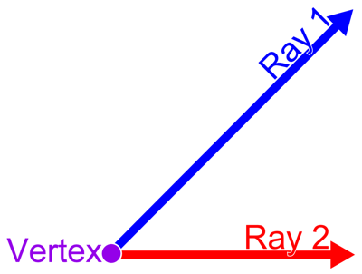A special kind of point that describes the corners or intersections of geometric shapes.
Polygon
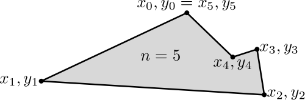A figure bounded by edges, and the points where two edges meet are the polygon's vertices.
Mesh

A polygon mesh is a collection of vertices, edges and faces that defines the shape of a polyhedral object in 3D computer graphics and solid modeling. AKA Geometric Model.
Triangles
Why do we use triangles, as opposed to squares (aka quads)?
The vertices of a triangle are guaranteed to lie along the same plane.
Buffer
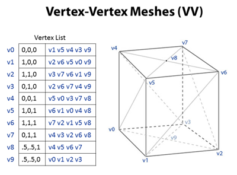A data buffer is a region of a memory used to temporarily store data while it is being moved from one place to another.
Affine Transformation
A function between affine spaces which preserves points, straight lines, and planes. Parallel lines stay parrallel. Doesn't preserve angles or distances, but does for ratios between points lying on a straight line.
Translate
Rotate
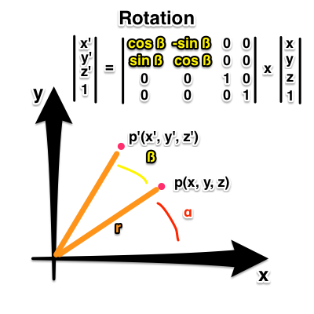Scale
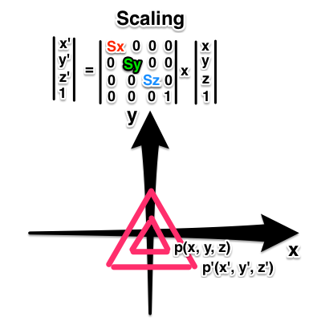Homogenous Coordinates
p(x, y, z, w) allows us to:
Represent infinite distances as (x/w, y/w, z/w) as w -> 0 which allows us to do perspective transformations.
Compose transformations as a series of matrix multiplications.
Perspective
Does the right side of the road eventually touch the left side?
Are the trees getting shorter?
Frustrum
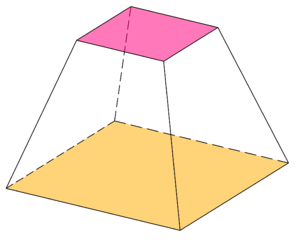The portion of a solid (normally a cone or pyramid) that lies between two parallel planes cutting it.
Viewing Frustum

AKA Field of View
Bitmap
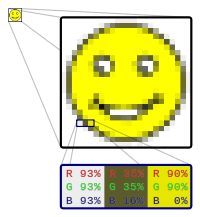A data structure representing a rectangular grid of pixels, or points of color, viewable via a display medium.
Textures
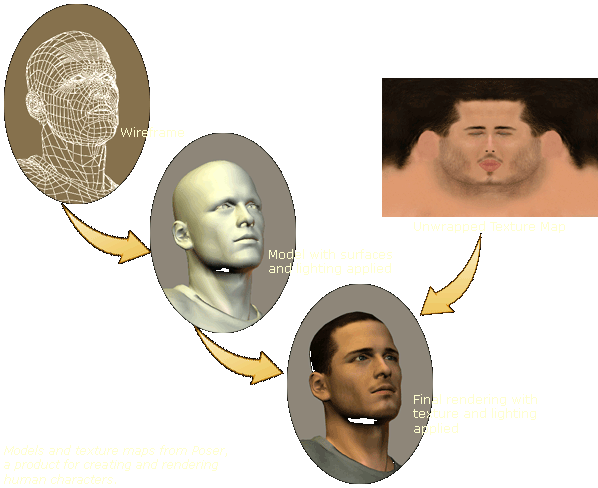A bitmap that will later be applied or mapped onto a mesh or model.
Sampling
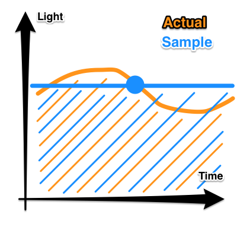The reduction of a continuous signal to a discrete signal.
Allows us to quickly approximate an integral.
Rasterization
The process to convert shapes, defined in a vector format into fragments (pixels or dots) for display on a video screen.
Fragment
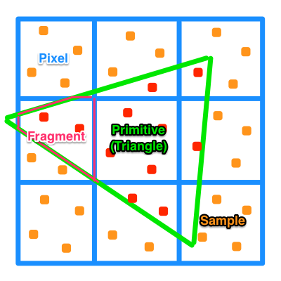The pixel generated by the rasterization process process which has color, depth, value, texture coordinates, and more.
Frame
One of the many still images which compose the complete moving picture; each image looks rather like a framed picture when examined individually.
Real Time Rendering
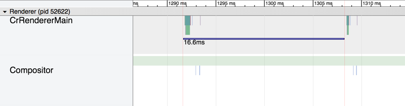Doing the rendering computation fast enough, so that the series of rendered images allow for interaction taking into account user input.
- 30 fps = 33.3 ms
- 60 fps = 16.6 ms
- 90 fps = 11.1 ms
Pre Rendering
Opposite of real time rendering.
Toy Story 3 took on average 7 hours to render 1 frame (24 fps), and at most 39 hours.
Shading
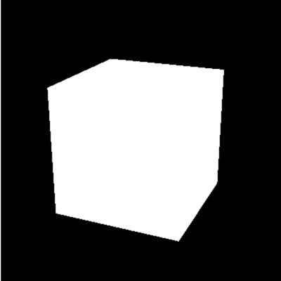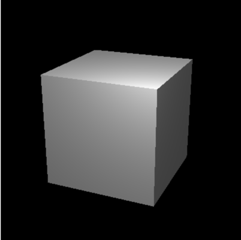Depicting depth perception in 3D models by varying levels of darkness.
Material
A shader program that implments a scattering function for a set of polygons.
Shaders
Small programs that run massively parallel on the GPU.
Shaders come in pairs (for now) of vertex and fragment.
A vertex shader can feed a fragment shader.
Shaders can be mixed and matched if the have the same output to input.
Vertex shaders are run for each vertex.
Fragment shaders are run for each fragment, with color values being interpolated inbetween.
Also, the DOM.
Anything outside of the 2x2x2 box is culled (doesn't get drawn).
For all sizes of images, (1, 1) represents top right.
Most bitmaps store the inverse vertical axis.
readPixels assumes lower left origin.
The Canvas
Getting a WebGL Context
var canvas = document.getElementById('my_canvas');
var gl = canvas.getContext('webgl') ||
canvas.getContext('experimental-webgl');
if (!gl) throw new Error('browser may not support webgl');
Clearing the Canvas
gl.clearColor(0.0, 0.0, 0.0, 1.0);
gl.clear(gl.COLOR_BUFFER_BIT);
Baby's First Shaders
Vertex Shader
attribute vec4 aPosition;
void main () {
gl_Position = aPosition;
gl_PointSize = 10.0;
}
Fragment Shader
precision mediump float;
uniform vec4 uFragColor;
void main () {
gl_FragColor = uFragColor;
}
Written in GLSL
Attributes and Uniforms
Uniforms and Attributes are inputs to shaders.
Uniforms are the same (uniform) for all vertices.
Attributes are unique per vertex.
Attributes are only inputs to vertex shaders.
Vertex shaders can output to fragment shaders via varyings.
Compile Shaders
function compile (gl, type, shaderSrc) {
var shader = gl.createShader(type);
gl.shaderSource(shader, shaderSrc);
gl.compileShader(shader);
if (!gl.getShaderParameter(shader, gl.COMPILE_STATUS)) {
throw new Error(gl.getShaderInfoLog(shader));
}
return shader;
};
var vertexShader = compile(gl, gl.VERTEX_SHADER,
vertexShaderSrc);
var fragmentShader = compile(gl, gl.FRAGMENT_SHADER,
fragmentShaderSrc);
Link Shaders
function link (gl, vertexShader, fragmentShader) {
var program = gl.createProgram();
gl.attachShader(program, vertexShader);
gl.attachShader(program, fragmentShader);
gl.linkProgram(program);
if (!gl.getProgramParameter(program, gl.LINK_STATUS)) {
throw new Error(gl.getProgramInfoLog(program));
}
return program;
};
var program = link(gl, vertexShader, fragmentShader);
gl.useProgram(program);
A 3D application may use more than one gl program.
Getting References to
Uniforms and Attributes
var aPosition = gl.getAttribLocation(program, 'aPosition');
var uFragColor = gl.getUniformLocation(program, 'uFragColor');
Setting Uniforms and
Attributes Directly
gl.vertexAttrib2f(aPosition, 0.0, 0.0);
gl.uniform4f(uFragColor, 1.0, 0.0, 0.0, 1.0);
Draw
// takes a mode, first, count
gl.drawArrays(gl.POINTS, 0, 1);
Separation of Concerns
Move shaders from HTML or JS into their own files, load with XHR.
Though, we can do cool tricks by procedurally generating strings of shaders at runtime.
Reflection
We can use reflection of a gl program to get references to its attributes and uniforms. This step is not strictly necessary, but can help you get references when shaders have many inputs.
var numAttributes = gl.getProgramParameter(program, gl.ACTIVE_ATTRIBUTES);
for (var i = 0; i < numAttributes; ++i) {
gl.getAttribLocation(program, gl.getActiveAttrib(program, i).name);
}
var numUniforms = gl.getProgramParameter(program, gl.ACTIVE_UNIFORMS);
for (i = 0; i < numUniforms; ++i) {
gl.getUniformLocation(program, gl.getActiveUniform(program, i).name);
}
Modularize and Reuse
Move compile, link, reflection, and other helper functions into reusable file.
ExampleDrawing Points
First, we need to beef up our shaders.
attribute vec4 aPosition;
attribute float aPointSize;
attribute vec4 aColor;
varying vec4 vColor;
void main () {
gl_Position = aPosition;
gl_PointSize = aPointSize;
vColor = aColor;
}
precision mediump float;
varying vec4 vColor;
void main () {
gl_FragColor = vColor;
}
Multiple Draw Calls
As a naive first attempt, let's draw each point with its own draw call.
var p = [
{ x: 0.0, y: 0.5, sz: 10.0, r: 1.0, g: 0.0, b: 0.0 },
{ x: -0.5, y: -0.5, sz: 20.0, r: 0.0, g: 1.0, b: 0.0 },
{ x: 0.5, y: -0.5, sz: 30.0, r: 0.0, g: 0.0, b: 1.0 }
];
for (var i = 0; i < p.length; ++i) {
gl.vertexAttrib4f(attributes.aPosition, p[i].x, p[i].y, 0.0, 1.0);
gl.vertexAttrib1f(attributes.aPointSize, p[i].sz);
gl.vertexAttrib4f(attributes.aColor, p[i].r, p[i].g, p[i].b, 1.0);
gl.drawArrays(gl.POINTS, 0, 1);
}
Multiple Draw Calls
Multiple draw calls sometimes are needed to build up a scene.
Draw calls can be the most expensive call.
Try to minimize draw calls.
Multiple Buffers
Instead, we can push data in multiple buffers to the GPU.
function initBuffer (gl, data, elemPerVertex, attribute) {
var buffer = gl.createBuffer();
if (!buffer) throw new Error('Failed to create buffer.');
gl.bindBuffer(gl.ARRAY_BUFFER, buffer);
gl.bufferData(gl.ARRAY_BUFFER, data, gl.STATIC_DRAW);
gl.vertexAttribPointer(attribute, elemPerVertex, gl.FLOAT, false, 0, 0);
gl.enableVertexAttribArray(attribute);
};
var positions = new Float32Array([0.0, 0.5, -0.5, -0.5, 0.5, -0.5]);
var pointSize = new Float32Array([10.0, 20.0, 30.0]);
var colors = new Float32Array([1.0, 0.0, 0.0, 0.0, 1.0, 0.0, 0.0, 0.0, 1.0]);
initBuffer(gl, positions, 2, attributes.aPosition);
initBuffer(gl, pointSize, 1, attributes.aPointSize);
initBuffer(gl, colors, 3, attributes.aColor);
Warning
Copying memory (uploading buffers) from the main memory to the video memory can be expensive. It can be faster to upload a single larger buffer in one go than multiple smaller buffers individually.
Interleaved Buffer
var data = new Float32Array([
0.0, 0.5, 10.0, 1.0, 0.0, 0.0,
-0.5, -0.5, 20.0, 0.0, 1.0, 0.0,
0.5, -0.5, 30.0, 0.0, 0.0, 1.0
]);
var bpe = data.BYTES_PER_ELEMENT;
var buffer = gl.createBuffer();
if (!buffer) throw new Error('Failed to create buffer.');
gl.bindBuffer(gl.ARRAY_BUFFER, buffer);
gl.bufferData(gl.ARRAY_BUFFER, data, gl.STATIC_DRAW);
gl.vertexAttribPointer(attributes.aPosition, 2, gl.FLOAT, false, 6 * bpe, 0);
gl.enableVertexAttribArray(attributes.aPosition);
gl.vertexAttribPointer(attributes.aPointSize, 1, gl.FLOAT, false, 6 * bpe, 2 * bpe);
gl.enableVertexAttribArray(attributes.aPointSize);
gl.vertexAttribPointer(attributes.aColor, 3, gl.FLOAT, false, 6 * bpe, 3 * bpe);
gl.enableVertexAttribPointer(attributes.aColor);
Warning
What if only some of the data in our buffer is changing every frame of animation?
It might be wiser to use multiple buffers instead of interleaved.
There is no one right answer; depends on situation.
Profile your app and figure out what works best.
Other tricks like Element Array Buffers can help reduce memory usage.
Drawing Modes
gl.drawArrays(mode, start, numVertices) can take:
- gl.POINTS
- gl.LINES
- gl.LINE_STRIP
- gl.LINE_LOOP
- gl.TRIANGLES
- gl.TRIANGLE_STRIP
- gl.TRIANGLE_FAN
Example
Perspective
In order to properly draw a 3D scene in perspective we need 3 things:
- Matrix of our model's transformations relative to its original coords. (Model Matrix)
- Matrix of where we are relative to model, where we are looking, and the up direction. (View Matrix)
- Matrix decribing viewing angle, aspect ratio, and near and far clipping plane of our viewing frustum. (Projection Matrix)
Animation
function animate (time) {
// update
mat4.rotateY(modelMatrix, modelMatrix, Math.PI / 180);
gl.uniformMatrix4fv(modelUniform, false, modelMatrix);
// render
gl.clear(gl.COLOR_BUFFER_BIT | gl.DEPTH_BUFFER_BIT);
gl.drawArrays(gl.TRIANGLES, 0, n);
requestAnimationFrame(animate);
};
Textures
Initialization
var texture = gl.createTexture();
gl.activeTexture(gl.TEXTURE0);
gl.bindTexture(gl.TEXTURE_2D, texture);
gl.texParameteri(gl.TEXTURE_2D, gl.TEXTURE_MIN_FILTER, gl.LINEAR);
gl.texParameteri(gl.TEXTURE_2D, gl.TEXTURE_MAG_FILTER, gl.LINEAR);
gl.texParameteri(gl.TEXTURE_2D, gl.TEXTURE_WRAP_S, gl.CLAMP_TO_EDGE);
gl.texParameteri(gl.TEXTURE_2D, gl.TEXTURE_WRAP_T, gl.CLAMP_TO_EDGE);
gl.uniform1i(uSampler, 0);
Textures
Sampling
gl.bindTexture(gl.TEXTURE_2D, texture);
gl.pixelStorei(gl.UNPACK_FLIP_Y_WEBGL, 1);
gl.texImage2D(gl.TEXTURE_2D, 0, gl.RGBA, gl.RGBA, gl.UNSIGNED_BYTE,
imgArrayBufferViewVideoOrCanvas);
Can be done during initialization for static images.
Must be done during requestAnimationFrame loop for video.
Must be done when limited on texture units per draw call.
ExampleWarning
Uploading textures to the GPU can be expensive.
Try to minimize texture swapping between frames.
Shading
Interpolation Techniques
Flat shading - Each polygon has its own color - Disco Ball
Gouraud shading - Normals at each vertex - Mach Bands
Phong shading - Interpolate normals across surface
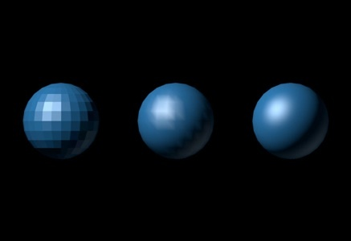Shading
Illumination Models
Lambert - The shade is the cosine of the angle between surface normal and light vector.
Blinn-Phong - The shade is composed of a specular, diffuse, ambient, and shininess components of the material.
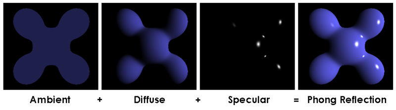Shading
All of this can be done with what you now know.
Light directions and material reflective coefficients are buffered.
Calculations done in shaders.
Exercise left to the reader.
Recommended Reading
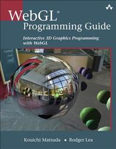Inspiration
Tony Parasi
Thanks
Nick Desaulniers
@LostOracle on Twitter
\n on mozilla.irc.org
nickdesaulniers on GitHub
nickdesaulniers.github.io-> blog